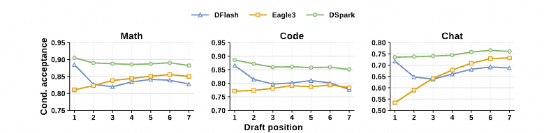
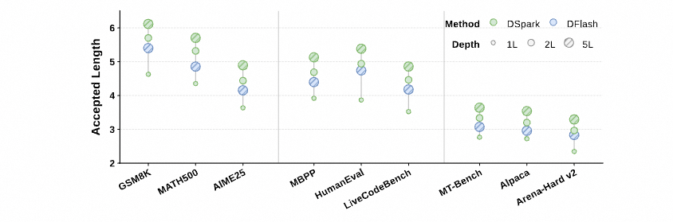
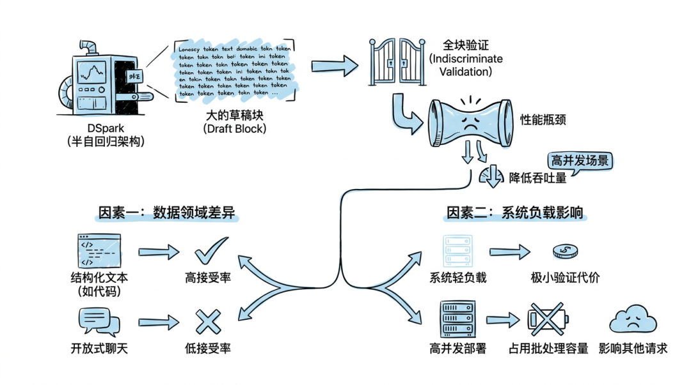
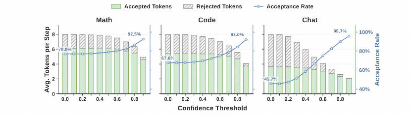
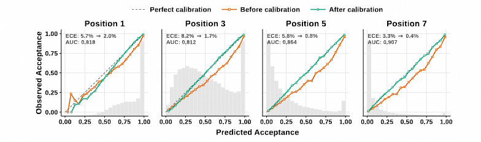
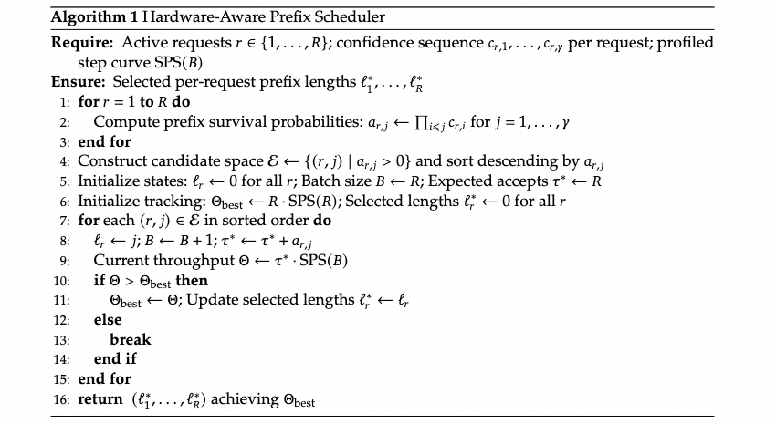
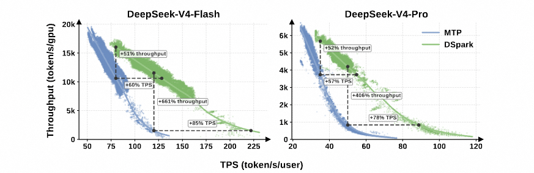
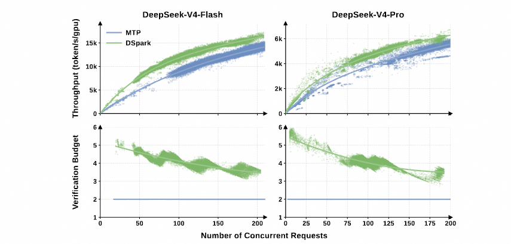

投机解码与 DSpark：半自回归起草 + 置信度调度
这一页拆 DeepSeek 推理侧最后一块拼图：DSpark。它做的事跟前面几页的注意力优化不是一路——那些是"少算、少存"，DSpark 管的是"用一次前向多吐几个 token"，即投机解码。但它的难点从来不在算法，而在两处系统工程：草稿质量沿块衰减，以及高并发下盲目验证长草稿反而拖垮总吞吐。
记号：\(p\) 为目标模型分布、\(q\) 为草稿模型分布；\(\gamma\) 为草稿块长度；\(N\) 为一个周期内实际接受的 token 数；\(t_d,t_v\) 分别为起草与验证的墙钟时间；\(b\) 为置信度头输出的条件接受概率；\(B\) 为提交给目标模型的总验证 token 数。
关于公式的说明：原文（微信公众号《详细解读DSpark投机解码的原理》）的公式是排版图片，文字提取时丢失了符号。本页公式是按原文文字描述自行重建的，结构与原文一致，但符号命名由我统一，不代表原文记号。涉及原文确切数值的结论我都标了出处。
投机解码的收益 = 每步接受几个 token，而这个数被两个方向夹住：草稿架构决定它能不能起草得准，系统调度决定验证这些草稿划不划算。DSpark 的做法是两端同时使劲——架构上用"重并行主干 + 极轻串行头"拿到高起点又抑制衰减，调度上让模型自己预测每个草稿的存活概率，再按真实硬件吞吐曲线决定验证多长。
一、性能模型：三个杠杆
先把账算清楚。每个生成 token 的平均延迟是"起草一次 + 验证一次"的成本，除以这一周期实际吐出的 token 数：
\[ \ell=\frac{t_d+t_v}{\mathbb{E}[N]},\qquad \text{加速比}=\frac{t_{\text{target}}}{\ell} \]
其中 \(t_{\text{target}}\) 是目标模型自回归单步的前向时间。
要提升加速比，只有三个方向可走，原文称为三个杠杆：
- 让学生写得更快——降低 \(t_d\)（更小的草稿模型、更少的串行开销）；
- 让学生猜得更准——提高 \(\mathbb{E}[N]\)（草稿架构、起草模型容量）；
- 让教授查得更巧——降低有效验证成本（调度，别验没价值的草稿）。
杠杆 3 是本文的重点，也是最容易被忽略的一根。它与前两者正交：草稿接受率再高，无差别地把整块都送进目标模型验证，在高并发下仍会挤占批处理容量、拉低系统总吞吐。前面各页讲的 KV 压缩让每步算得更便宜，DSpark 则是让每步算得更值。
投机解码的"免费验证"只在 batch 小、GPU memory-bound 时成立。把 \(\gamma\) 个 token 打包成一次前向，算术强度上升，才从 memory-bound 走向 compute-bound，收益最大。一旦 batch 已经很大、GPU 已经 compute-bound，每多验证一个 token 的边际成本就是正的，前面的账全部要重算。
二、接受率的数学：1 − TV 距离
整个投机解码的地基是一个精确等式。单个候选 token 被接受的概率：
\[ \alpha(y)=\min\!\left(1,\ \frac{p(y\mid x,\,y_{<\gamma})}{q(y\mid x,\,y_{<\gamma})}\right),\qquad \mathbb{E}[\alpha]=1-\operatorname{TV}(q,p) \]
\[ \operatorname{TV}(p,q)=\tfrac12\sum_y\left|p(y)-q(y)\right| \]
几何直觉：\(\operatorname{TV}\) 就是两个概率分布图上的重叠面积。\(q\) 与 \(p\) 完全重合时接受率为 1；支撑集不相交时为 0。
由此得到一个很硬的训练结论：草稿模型的训练目标不该是"预测下一个正确 token"，而应该是"让整个输出分布贴近目标分布"。最小化 \(\operatorname{TV}\) 就等价于最大化接受率——这就是 DSpark 训练时用分布匹配损失（而非纯交叉熵）的理由。
逐位置的条件接受率是链式分解的：设位置 \(i\) 的条件接受概率为 \(\alpha_i\)（在位置 \(1\ldots i-1\) 均被接受的条件下），则整块被完整接受的概率为乘积 \(\prod_{i=1}^{\gamma}\alpha_i\)。这个乘积后面会被原样用到调度器里——先把这条记住。
三、起草架构的三条路线
3.1 三条路线的取舍
杠杆 1 和杠杆 2 之间存在根本性的架构权衡，原文归纳成三条路：
| 路线 | 起草耗时 | 接受质量 | 问题 |
|---|---|---|---|
| 自回归起草 EAGLE / Medusa 一类 | 随 \(\gamma\) 线性增长 | 高，序列连贯 | 起草变慢，容易吃掉收益 |
| 并行起草 DFlash | 与 \(\gamma\) 无关 | 低，后缀衰减 | 产生"多模态冲突" |
| 半自回归 DSpark | 接近并行 | 介于两者之间 | 需要一个轻量串行模块 |
如果每个位置的条件接受率都等于同一个 \(\alpha\)，期望接受长度是一个截断几何级数：
\[ \mathbb{E}[N]=\sum_{i=0}^{\gamma}\alpha^{\,i}=\frac{1-\alpha^{\,\gamma+1}}{1-\alpha} \]
求和从 \(i=0\) 起：\(i=0\) 那一项是目标模型无论如何都会补上的那个 bonus token。两个边界因此都对得上——\(\alpha\to 1\) 时 \(\mathbb{E}[N]=\gamma+1\)，整块全中；\(\alpha\to 0\) 时 \(\mathbb{E}[N]\to 1\)，退化成标准自回归。→ 逐步推导见投机解码的数学
而这个数对 \(\alpha\) 极其敏感：\(\alpha\) 从 0.7 提到 0.9，在 \(\gamma=8\) 时 \(\mathbb{E}[N]\) 会从 2.94 跳到 5.22。这就是为什么"把草稿准度提上去"值得反复折腾。
四、并行起草的病：多模态冲突
并行起草（DFlash）一次前向同时产出全部 \(\gamma\) 个草稿的 logits。代价是：每个位置都在对"所有可能的前置 token"做边缘化，而不是以实际采样出的那一个为条件。
原文的例子很直白。当上下文允许多种合理续写——"of course" 和 "no problem" 都行——并行模型可能吐出"of problem"或"no course"这种不连贯的组合。每个片段单看都合理，拼起来却不成立。原文称之为多模态冲突。
后果是接受率沿块迅速衰减：后续位置的 token 本该随着前面 token 锁定语义而变得更可预测，但边缘化操作把这个确定性优势抹掉了。
DFlash 在位置 2→7 上的接受率：代码 0.87→0.78，聊天 0.72→0.63，衰减明显。而自回归的 EAGLE-3 在聊天上从 0.53 升到 0.74。（微信原文 2.4.1）

但这里有个反直觉的事实，值得单独记住：并行起草的最终接受长度仍然常常超过自回归起草。原因是位置 1 的杠杆最高——投机解码是严格的前缀匹配，第一个 token 被拒整块作废，所以位置 1 的准确率不成比例地放大最终收益。而自回归起草模型为了压延迟只能做得很浅（EAGLE-3 就受此限制），位置 1 的容量打不过更深的并行主干：
数学任务 DFlash 0.88 对 EAGLE-3 0.81；聊天任务 0.72 对 0.53。DSpark 继承了这一点，数学上从 0.93 起步。（微信原文 2.4.1）
于是架构目标就清楚了：把并行主干的高容量用在起始 token 上，把自回归的依赖建模用在后续 token 上。DSpark 的半自回归设计直接由这个观察导出。
五、DSpark 之一：半自回归生成
两个阶段分工明确：
- 并行阶段——并行主干（DFlash）对整块跑一次前向，产出隐藏状态和基础 logits。原文提到对 DFlash 主干做了一处微调：把锚点 token 本身当作第一个预测位置，而不是"锚点 + \(\gamma\) 个 mask、只预测 mask"，于是 \(\gamma+1\) 个输入位置产出 \(\gamma\) 个草稿 logits，在草稿质量相近的前提下省掉了起草计算。
- 串行阶段——在基础 logits 上叠加一个依赖前缀的转移偏差，让每个草稿位置可以以块内此前已采样的 token 为条件，从左到右采样。
注意串行模块的定义方式：它不是去定义一个全局归一化的能量模型，而是通过自回归分解导出一个因果的块分布。因为这个采样循环本质上是串行的，模块本身必须极轻量，否则起草延迟会被它主导、抵消并行阶段的收益。
5.1 马尔可夫头（Vanilla Markov）
最简实现把位置 \(i\) 的依赖限制在紧邻的前一个 token 上，退化成一阶转移。原则上这就是一个完整的 \(|V|\times|V|\) 矩阵，用低秩分解近似：
\[ B(x_{k-1},\cdot)\;\approx\; W_1[x_{k-1}]\,W_2,\qquad W_1\in\mathbb{R}^{|V|\times r},\;\; W_2\in\mathbb{R}^{r\times|V|} \]
\[ \ell_i \;=\; \text{base\_logits}_i \;+\; B(x_{i-1},\cdot),\qquad x_i \sim \mathrm{Categorical}(\mathrm{softmax}(\ell_i)) \]
\(W_1\) 是嵌入查找表，\(W_2\) 是 logit 投影，秩 \(r\) 很小。低秩是关键——它让存储和每步计算在大词表下依然可忽略，串行循环才跑得起来。
回到多模态冲突那个例子：一旦位置 1 采样出 "of"，马尔可夫头就会在位置 2 抬高 "course"、压低 "problem"，冲突被消掉。
代码里还有一个门控变体：把主干隐藏状态和前一 token 的嵌入拼起来过一层投影出 gate，用 gate 调制偏差，而不是无脑加上去。
5.2 RNN 头
马尔可夫头一步之后就失忆了——位置 \(i\) 看不到 \(x_{i-2}, x_{i-3}\ldots\)。RNN 头用一个循环状态 \(s_k\) 累积块内完整前缀历史：
\[ z_k=\big[\,s_{k-1}\;;\;W_1[x_{k-1}]\;;\;h_k\,\big],\qquad \mathrm{proj}=W z_k \]
\[ [\,\text{gate},\text{cand},\text{out}\,]=\mathrm{proj},\qquad s_k=g\odot s_{k-1}+(1-g)\odot \tanh(\text{cand}),\qquad b_k=W_2\tanh(\text{out}) \]
三个输出部分由同一个线性投影联合参数化、切成三段（这正是标准 GRU 的做法，kernel 上更省），状态 \(s_0\) 初始化为零。
哪怕只给 DSpark 一个 2 层的串行头，表现也超过了 5 层的全并行 DFlash。总起草时间只增加约 1%，换来高达 30% 的草稿质量提升。（微信原文 2.4.2）

六、DSpark 之二：置信度头与校准

半自回归让 DSpark 能起草出很大的块，但不加选择地验证整块会压低系统吞吐。两个维度的原因：
- 数据维度——代码、数学这类结构化任务接受率高，开放式聊天接受率低，同样长度对不同请求的价值完全不同；
- 系统维度——高并发下，验证那些注定被拒的 token 是在浪费宝贵的批处理容量。
6.1 置信度头
对每个草稿位置输出一个标量。关键在于它建模的是条件概率：在块内所有先前 token 都已被接受的条件下，该位置的草稿 token 通过目标模型验证的概率。结构很轻——一个线性投影接 sigmoid：
\[ b_i=\sigma\!\left(w^\top\big[\,h_i\;;\,W_1[x_{i-1}]\,\big]+c\right) \]
\[ b_i^{\text{target}}=\operatorname{TV}\!\left(q(\cdot\mid x,\,y_{<i}),\ p(\cdot\mid x,\,y_{<i})\right) \]
\[ \text{存活概率}\quad S_i=\prod_{j\le i} b_j \]
输入就是"并行主干隐藏状态 + 前一 token 的马尔可夫嵌入"，输出一个标量，用二分类交叉熵监督。
6.2 序列化温度缩放（STS）
这里有个容易忽略但很要紧的区分：
- 阈值启发式只需要置信度分数能把草稿排对序；
- 硬件感知调度需要累积接受概率的绝对值精确，因为要用它算期望接受长度。
神经网络天生"过度自信"，直接用原始分数会让吞吐量估计失真。DSpark 用 STS（Sequential Temperature Scaling）修正：留出验证集，从左到右逐位置做 1 维网格搜索，最小化累积乘积的期望校准误差（ECE），同时保持此前位置已校准的分数固定。
原始模型区分能力已经不错，但 ECE 偏高——按草稿位置分别为 5.7% / 8.2% / 5.8% / 3.3%（位置 1/3/5/7）。STS 把它们分别降到 2.0% / 1.7% / 0.8% / 0.4%，即原值的三分之一到十分之一。
注意一个反直觉的分化：ECE 随位置递减，AUC 却随位置递增（0.818→0.907）。越靠后的草稿越"可预测"，所以预测更容易、但也更容易被过度自信地高估——这正是要逐位置校准而不是一次性全局校准的理由。
温度缩放是保序变换：纠正概率的绝对值的同时不打乱置信度头学到的相对排名——所以校准不会伤到排序能力。
把置信度当阈值用时，效果已经很明显（接受率随阈值提高而上升，因为估计器滤掉了会被拒的尾部 token）：聊天 45.7%→95.7%，数学 76.9%→92.5%，代码 67.6%→92.0%。聊天的修剪幅度最大——高熵的分布让固定长度验证最不划算。


七、硬件感知前缀调度器
这一节是全文最"工程"的部分，也是最见功力的地方。核心问题：手上有一批等待验证的请求和草稿，每个请求该验证多长，才能让系统每秒吐出的总 token 最多？
形式化成全局吞吐最大化问题：
\[ \max_{\{n_i\}}\ \frac{\sum_{i=1}^{m}\ \mathbb{E}[\,\text{接受数}(i,n_i)\,]}{\mathrm{SPS}\!\left(B\right)}, \qquad B=\sum_i n_i \]
其中 \(\mathrm{SPS}(B)\) 是引擎在 batch size 为 \(B\) 时的每秒步数——这条容量曲线在引擎初始化时离线测一次、存成一张轻量成本表，不是运行时估的。
注意这个目标形式：它既不是单纯最大化收益，也不是最小化成本，而是最大化两者的比值（效率）。收益随准入 token 数上升、成本随总 batch 上升，峰值就在"边际收益 = 边际成本"处。
7.1 贪心为什么是对的

看着像组合搜索，但因为存活概率 \(S_i\) 相对 \(n_i\) 单调不增，贪心就够了：把请求的验证长度从 \(n\) 扩到 \(n+1\)，预期接受数的边际增益恰好等于 \(S_{n+1}\)。所以按存活概率全局排序，本身就尊重了块内的前缀依赖关系。
于是算法是：把所有请求的候选前缀扩展全局按存活概率降序排列，从"每个请求只验 1 个 token"起步，逐个准入，查表更新 \(\mathrm{SPS}(B)\) 和总吞吐，直到吞吐不再上升就停。
无损投机解码严格要求非预见性：准入决策不能依赖未来的候选 token。麻烦在于置信度头吃的是"前一个已采样 token"的马尔可夫特征，所以算下一个 \(S_{i+1}\) 必然要先把那个候选项实例化出来。如果事后回头做全局搜索，就等于把 \(S_{i+1}\) 泄漏进了第 \(i\) 步的决策，引入选择偏差、改变采样分布。
数学上这跟鞅（martingale）是一回事：过程必须是鞅，未来的条件期望才等于当前观测值，分布才不被污染。所以算法里那个"吞吐下降就 break"的提前停止不是优化，是正确性要求——它保证决策只用到"过滤（filtration）"中截至当前步的信息。原文附录 A 专门用反例解释了为什么这个 break 不能去掉。
补充一个前提：这种步进式提前停止只有在目标函数单峰时才能给出全局最优，这隐含假设了硬件容量曲线平滑衰减。记住这句——第八节会说它怎么被打破。
八、落地：两个理想化假设怎么被现实打掉
算法 1 在理论上可靠，但直接部署会撞上两个硬冲突。
8.1 冲突一：硬件曲线是锯齿状的
算法假设 \(\mathrm{SPS}(B)\) 平滑下降，真实硬件却本质上是离散的、阶梯式的。batch size 跨过某个坎时性能可能断崖下跌，贪心容易被卡在局部最优。
作者的解法很直接：把 break 去掉，做无约束的全局搜索。但这就绕回了第 7.1 节的非预见性问题——所以必须先解决时序冲突。
8.2 冲突二：ZOS 要求提前知道 batch size
现代推理引擎为了极致效率走 CUDA graph 回放 + 零开销调度（ZOS），要求下一步的 batch size 在当前步算完之前就知道。同步调度必然让 GPU 流水线停顿。
解法是一个两步延迟的异步机制，把决策拆成两半：
| 决策内容 | 用哪份信息 | 作用 |
|---|---|---|
| 决策哪些（准入哪些 token） | 当前步最新的累积置信度 | 排序、挑最有信心的一定在前 |
| 决策多少（截断到多长） | 两步前的置信度输出估计容量上限，适配 ZOS 流水线 |
这样一来，"两步前的历史预测"只影响长度截断，而不影响哪些 token 被选中；准入过程变成一个动态的 top-\(k\) 选择。容量近似引入了轻微时间偏差，但选择机制根本上是保序的。
而这一步顺手解决了 8.1：因为无约束搜索只评估两步之前的历史预测，准入决策与当前 token 的实例化天然隔离，截断长度内在地只依赖两步前可得的信息。无约束全局搜索因此变得安全——异步设计在这里形成了一道"因果屏障"，让作者能大胆去掉 break 去跨越硬件悬崖。
8.3 训练与执行的两个系统技巧
- 隐层状态通信：在并行节点间传目标模型的全词表 logits会造成严重带宽瓶颈。改成只传 LM 头之前的隐层状态，LM 头的投影计算只在草稿模型所在节点上、针对被采样的目标位置局部执行。通信量从 \(O(|V|)\) 降到 \(O(d_{\text{hidden}})\)。
- 锚点有界的序列打包：采样固定数量的草稿锚点，把散落各处的预测块打包成密集批次，用 token 级注意力索引而非二维 mask 管理因果性，避免 padding 的计算与显存开销。
- 可变长度验证：标准解码 kernel 是按固定查询长度极致优化的，直接处理变长验证前缀会因 padding 和负载不均导致 GPU 利用率崩塌。解法是物理与逻辑解耦——物理上把所有请求的待处理 token 全部展平成一个一维 token 池统一密集计算，逻辑上的序列依赖靠一个 marker tensor 传达。具体到 V4 架构上只有 index-attention 和 compress kernel 需要改。
九、实验数字汇总


| 项目 | 数值 |
|---|---|
| DSpark 位置 1 接受率（数学） | 0.93 起步 |
| 置信度头 ROC-AUC | 0.81 → 0.90 |
| ECE（STS 前 → 后） | 3%–8% → 约 1% |
| 阈值剪枝后接受率 | 聊天 45.7%→95.7%；数学 76.9%→92.5%；代码 67.6%→92.0% |
| 2 层串行头 vs 5 层全并行 | 起草时间 +约 1%，草稿质量最高 +30% |
| V4-Flash @ 80 tok/s/user SLA | 聚合吞吐较 MTP-1 +51% |
| V4-Flash @ 120 tok/s/user SLA | 名义 +661%（原文说明：基线此时已接近操作边界） |
| V4-Flash 匹配吞吐下 | 单用户生成速度 +60% ~ 85% |
| V4-Pro @ 35 / 50 tok/s/user SLA | 聚合吞吐 +52% / 名义 +406% |
| V4-Pro 匹配容量下 | 单用户生成速度 +57% ~ 78% |
| 生产并发下验证预算 | 把 MTP-1 的静态 2 token 扩到约 4–6 token/请求 |
一、661% / 406% 不要当加速比看。高 SLA 锚点下 MTP-1 基线被迫维持极小的并发批次、接近操作边界，比值自然虚高。原文自己也把它解释为"DSpark 扩展了可行交互性前沿的证据"，而非在充分利用的基线上的倍速。想看真实稳态差距，看"匹配吞吐/容量下的单用户速度提升"那一行：60%~85%。
二、DSpark 的对比对象是 MTP-1。即单 token 设置，这个配置历史上一直留在生产里，原因是静态多 token 草稿模型（MTP-3/5）在高并发下会因验证开销严格降低聚合吞吐。所以这些数字的真正含义是：DSpark 安全地解锁了长草稿块，而不是"长草稿块终于不亏了"。
十、官方配置口径
上面的机制叙述来自 DeepSpec 论文解读；而zartbot 对官方技术报告的解读给出的是发布配置的具体数值，两者互相印证：
| 配置项 | 值 | 含义 |
|---|---|---|
| \(\texttt{dspark\_block\_size}\) | 5 | 草稿块长度，对应 \(\gamma=5\) |
| \(\texttt{dspark\_target\_layer\_ids}\) | [37, 38, 39] | 3 个额外的 SWA-128 草稿层 |
| \(\texttt{dspark\_n\_routed\_experts}\) | 128 | 草稿层用更小的 MoE，路由专家取 Top-3 |
| （机制） | — | 读主干层入口处 4 条残差流的均值；并行一次算出全部草稿位置；马尔可夫头建模依赖；置信度头决定验证长度 |
注意 target_layer_ids 是 3 个而 block_size 是 5——这是两个不同的量，别混：前者是草稿模型的层数（挂在主干 37/38/39 层，读 mHC 的 4 条残差流均值作为输入），后者是每个周期起草的 token 数。"4 条残差流"正是 mHC 提供的结构。
即使前缀调度器把无用的验证压到最低，DSpark 仍需并行主干先跑完整块，产生固定的草稿端成本。对那些接受率天生很低的复杂查询，这笔预付的开销无法收回。原文提出的方向是：草稿模型内部引入基于难度的提前退出，让这类请求绕过全块生成。
本页素材来源：《详细解读DSpark投机解码的原理》（DSpark 机制、实验与调度的主力来源）· zartbot《DeepSeek-V4.1 Flash 技术报告解读》（发布配置数值）· DeepSpec 开源仓库。数学推导为按原文文字自行重建，非原文翻译亦非逐式对照；原文公式以图片排版，符号无法直接提取。收录原始配图可另行补充。